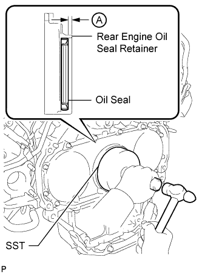
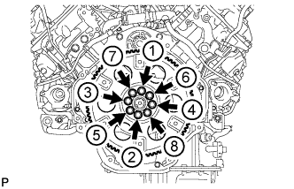
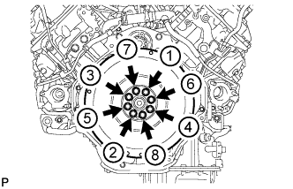
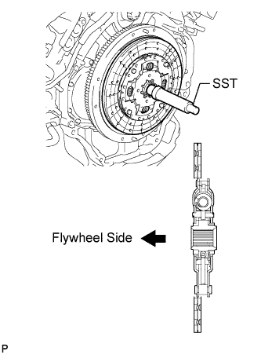
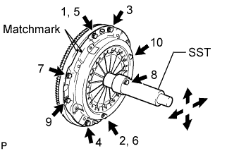

REAR CRANKSHAFT OIL SEAL > INSTALLATION |
| 1. INSTALL REAR CRANKSHAFT OIL SEAL |
 |
Using SST and a hammer, tap in a new oil seal as shown in the illustration.
| 2. INSTALL DRIVE PLATE AND RING GEAR SUB-ASSEMBLY (for Automatic Transmission) |
 |
Install the rear crankshaft balancer weight labeled C, ring gear labeled B and rear drive plate spacer labeled A with 8 new bolts.
 |
Using a wrench, hold the crankshaft.
 |
Uniformly install and tighten the 8 bolts in the sequence shown in the illustration.
| 3. INSTALL FLYWHEEL SUB-ASSEMBLY (for Manual Transmission) |
 |
Temporarily install the flywheel with 8 new bolts.
|
Using a wrench, hold the crankshaft.
Uniformly install and tighten the 8 bolts in the sequence shown in the illustration.
| 4. INSTALL CLUTCH DISC ASSEMBLY (for Manual Transmission) |
 |
Insert SST into the clutch disc, then insert the clutch disc into the flywheel.
| 5. INSTALL CLUTCH COVER ASSEMBLY (for Manual Transmission) |
 |
Align the matchmark on the clutch cover with the one on the flywheel.
In the order shown in the illustration, temporarily install the 8 bolts starting from the bolt located near the knock pin on the top.
Check that the disc is in the center by lightly moving SST up and down, and left and right.
Evenly tighten the bolts by following the order shown in the illustration.
| 6. INSTALL AUTOMATIC TRANSMISSION ASSEMBLY |
Install the automatic transmission assembly (Click here).
| 7. INSTALL MANUAL TRANSMISSION UNIT ASSEMBLY |
Install the manual transmission unit assembly (Click here).
| 8. CONNECT CABLE TO NEGATIVE BATTERY TERMINAL |
Connect the cables to the negative (-) main battery and sub-battery terminals.